Guides › Making & repair · Emergency · Index A–Z
The dozen or so knots that do nearly every job, step by step, and the rope itself: what it can hold, what weakens it, keeping it sound, lifting with blocks and tackle, and making cord. The Army's rigging manual (FM 5-125) and survival manual (FM 3-05.70) are in Manuals\ArmyFieldManuals; the USDA's Rope on the Farm (1964) in Southern-Oregon\Homestead-Skills\Food-Crafts-Tools; Military Mountaineering (TC 3-97.61) and Kephart's Camping and Woodcraft in Southern-Oregon\Travel-On-Foot; the Air Force survival handbook (AFH 10-644) and the 1911 Scout handbook in Southern-Oregon\Comms-Signals\Visual-Sound-Signals; picket lines and pack hitches (FM 25-7) in Southern-Oregon\Horses-Draft-Animals\Packing-Travel.
The short version
- Learn a few knots well. "It is better to learn a few knots perfectly" than a long list (Bluejackets' Manual, p. 258).
- The square knot is for bundles, not loads: it "will not hold if the ropes are wet or if they are of different sizes" (FM 5-125, p. 46). Join ropes with a sheet bend.
- Every knot weakens rope. A splice keeps 80–90% of its strength, a knot 50–60% (Rope on the Farm, p. 6).
- Load rope to a quarter of its breaking strength or less. Fiber rope, rule of thumb: safe load in tons = (diameter in inches)², so ½ inch carries ¼ ton (FM 5-125, p. 20).
- Don't trust rope you can't vouch for: "A rope of unknown history or construction should not be used for any application" (TC 3-97.61, p. 170).
- Stay out of its way. Never stand in a loop of loaded rope (rule of thumb), never wrap rope round your hand (4-H PNW 587, p. 51), and never hold a hanging load by hand alone — take a turn round a post (Mounted Instruction, p. 222).
- Round an animal's neck, only a bowline (same 4-H page).
- Store rope dry, off the ground, out of the sun (Rope on the Farm, pp. 12, 14).
| The job | The knot |
|---|---|
| Tie a bundle, a sack, a bandage (never a load) | Square knot |
| A loop that won't slip: round a post, a person, an animal's neck | Bowline |
| Join two ropes, even of different sizes or wet | Sheet bend |
| Quick tie to a post; start a lashing | Clove hitch |
| Tie off to a tree or ring under load and leave it | Round turn and two half hitches |
| A tent or guy line you can tighten later | Taut-line hitch |
| Cinch a load down; stretch a picket line | Trucker's hitch |
| Drag or lift a log or pole | Timber hitch plus a half hitch |
| Stop an end slipping through; the strongest fixed loop | Figure eight |
| Grip another rope; hold what you've hauled | Prusik |
| Poles crosswise; an A-frame | Square and shear lashings |
| Stop fraying; join or make an eye for good | Whipping and splices |
| Tie up a horse or cow | Quick-release knot |
Rope words (FM 5-125, pp. 41–42): the standing part is the long, idle part; the running end is the end you tie with; a bight is a U-bend; a loop crosses itself; a turn goes once round a post; a round turn goes round and a half.
Practise with rope at least ⅛ inch thick, not string (Kephart, p. 275). Dress every knot — parts lying neatly side by side, slack pulled out. A sloppy knot can lose another 50% of its strength (FM 3-05.70, p. 640).
For two ends of the same size where nothing hangs on it (AFH 10-644, p. 262; square, granny and thief knots; Square knot):
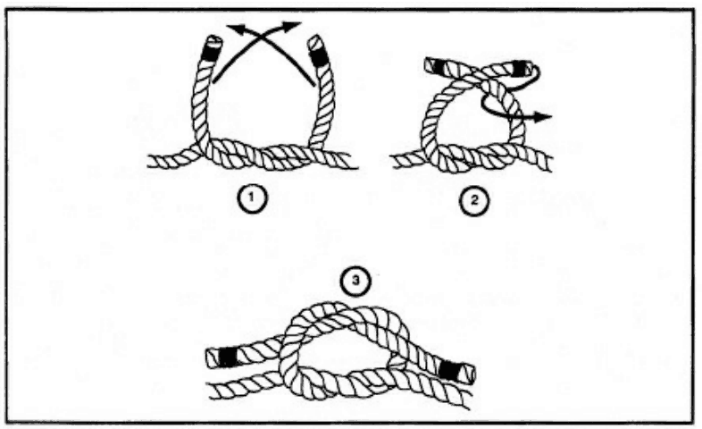
Right over left and under, then left over right and under (FM 5-125, p. 48).On a rope that matters, tie an overhand knot in each tail — and use it only "when it is impossible to tie a more secure joining knot" (TC 3-97.61, p. 189; with safety knots).
"The best knot for forming a single loop that will not tighten or slip under strain" (FM 5-125, p. 49; drawing; Bowline).
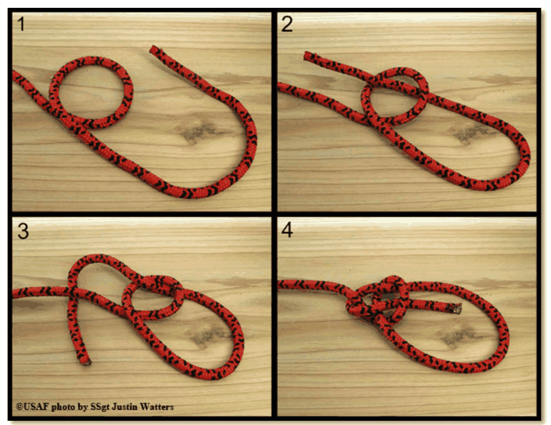
Steps 1 to 4: up through the small loop, round behind, back down (AFH 10-644, p. 265).It unties easily even after a heavy pull. For lifting a person, use a figure-eight loop (below).
(FM 5-125, p. 47; single and double; Sheet bend)
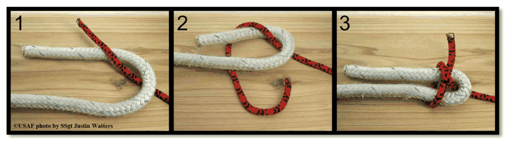
The thin rope goes up through the thick one's U, round behind it, and under itself (AFH 10-644, p. 264).It can loosen when slack. For wet rope or heavy loads take the thin end round a second time before tucking: the double sheet bend "will not slip or draw tight under heavy loads" (AFH 10-644, p. 264).
(FM 5-125, p. 61; drawing; end of a rope; Clove hitch)
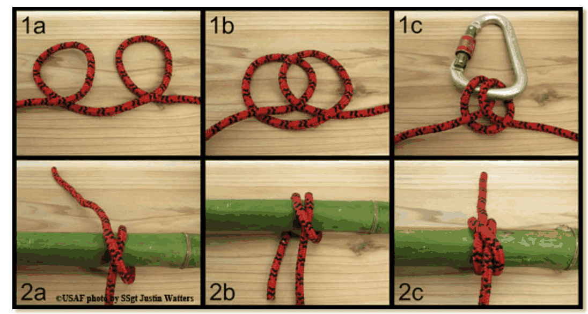
Top row: over a post top. Bottom row: round a pole (AFH 10-644, p. 269).It slips when the pull comes and goes: "tension must remain on the knot or it will slip" (FM 3-05.70, p. 643). Add a half hitch round the standing part.
Two half hitches: pass the end round the post, round the standing part and back under itself; do it again beside the first (AFH 10-644, p. 269; drawing).
Round turn and two half hitches — for a real load. It "does not jam" (FM 5-125, p. 60); it is the Army's "main anchor knot" where "high loads would make other knots jam" (FM 3-05.70, p. 642; Round turn and two half-hitches):
No book here draws it. It is a rolling hitch tied round the rope's own standing part, and a rolling hitch "grips tightly but is easily moved along a rope or pole when the strain is relieved" (FM 5-125, p. 61; rolling hitch; Taut-line hitch). Steps (rule of thumb):
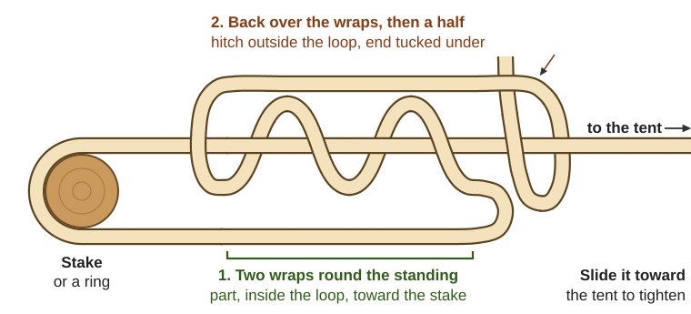
Two wraps inside the loop, one half hitch outside; drawn loose so the rope's path shows (a diagram drawn for this guide).Slacken guy lines before rain: wet rope shrinks "and may break" (FM 5-125, p. 21).
The Army's pack manual stretches picket lines with it (a "pullback"), giving "a two-to-one mechanical advantage" (FM 25-7, p. 156); the Air Force ties packs with it (AFH 10-644, p. 451; Trucker's hitch).
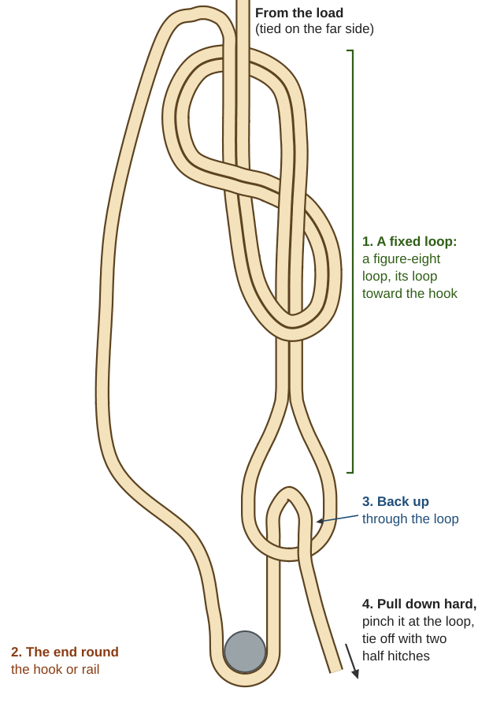
A figure-eight loop, the end round the hook and back up through the loop; pull, pinch and tie off (a diagram drawn for this guide).The rope rubs on itself in the loop: don't lift loads with it (rule of thumb).
"The more tension applied, the tighter the hitch becomes"; it loosens when the strain comes off (FM 5-125, p. 60; drawing; Timber hitch).
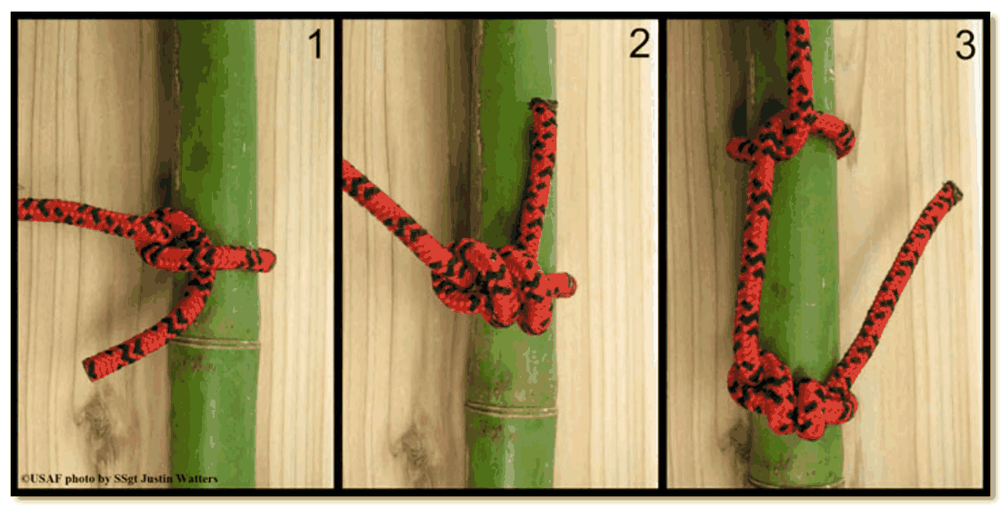
A half hitch, a timber hitch, and the two together for dragging or lifting (AFH 10-644, p. 268).Stopper: make a loop in the standing part, take the end round behind the standing part and back down through the loop (AFH 10-644, p. 262; drawing; Figure-eight knot). It stops an end slipping through a pulley or ring and is easy to untie (FM 5-125, p. 45).
Figure-eight loop: "the main rescue knot in use today", stronger than the bowline and easier to check, though harder to untie when wet after a load (FM 3-05.70, p. 647). Double the rope into a bight as long as the loop, tie a figure eight with it, and check the two ropes run side by side without crossing (TC 3-97.61, p. 180; drawing). To tie it round a tree, tie a loose single eight, pass the end round, and trace it back through (retraced).
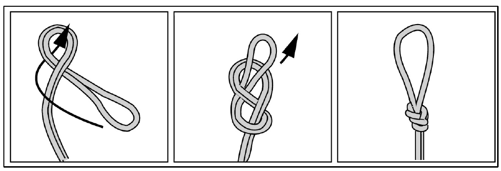
The figure-eight loop tied in a doubled rope (TC 3-97.61, p. 180).It "will slide ... if no tension is applied, and will hold if tension is applied" (FM 3-05.70, p. 645; Prusik): a handhold or foot loop on a fixed rope, or a catch that holds a hauled load while you reset.
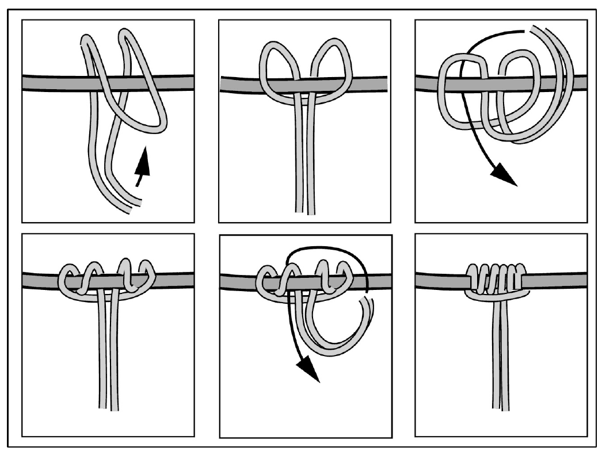
Six neat wraps and one bar across them (TC 3-97.61, p. 195).Lashings start and end with clove hitches; frapping turns, wound between the poles round the wraps, pull everything tight (FM 3-05.70, p. 640; Lashing).
(FM 5-125, p. 67; drawing; AFH)
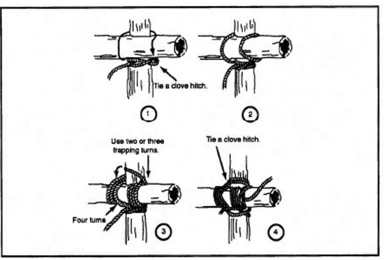
Clove hitch, four turns, frapping turns, clove hitch (FM 5-125, p. 68).For an A-frame to lift or hang things (FM 5-125, p. 67; drawing):
For legs that must spread wide, wind more loosely (Kephart, p. 296). Three poles make a tripod (tripod lashing).
"Use splices instead of knots whenever possible" (Rope on the Farm, p. 6).
(AFH 10-644, p. 260; drawing; Whipping knot)
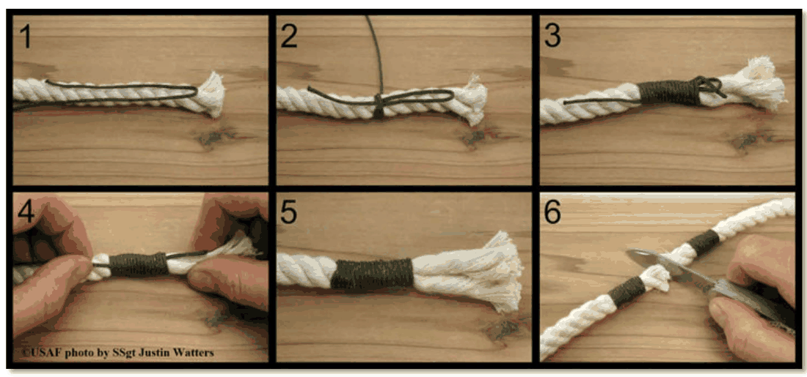
Whipping an end, and (6) whipping twice before cutting (AFH 10-644, p. 261).Wrap about as long as the rope is thick (Rope on the Farm, p. 6). Before cutting, whip twice 1–2 inches apart and cut between (FM 5-125, p. 42). Synthetic rope: melt only the cut end (TC 3-97.61, p. 209).
Joins two ropes of the same size for good; it's fatter than the rope, so not for pulleys (Rope on the Farm, p. 7; steps; Rope splicing). Open strands with a smooth, tapered hardwood pin about a foot long (p. 6).
If two strands go under one, redo them (p. 6). For pulleys, use the slimmer long splice (steps).
"As a permanent loop or eye, no knot can compare with this splice" (FM 5-125, p. 70; steps; Eye splice).
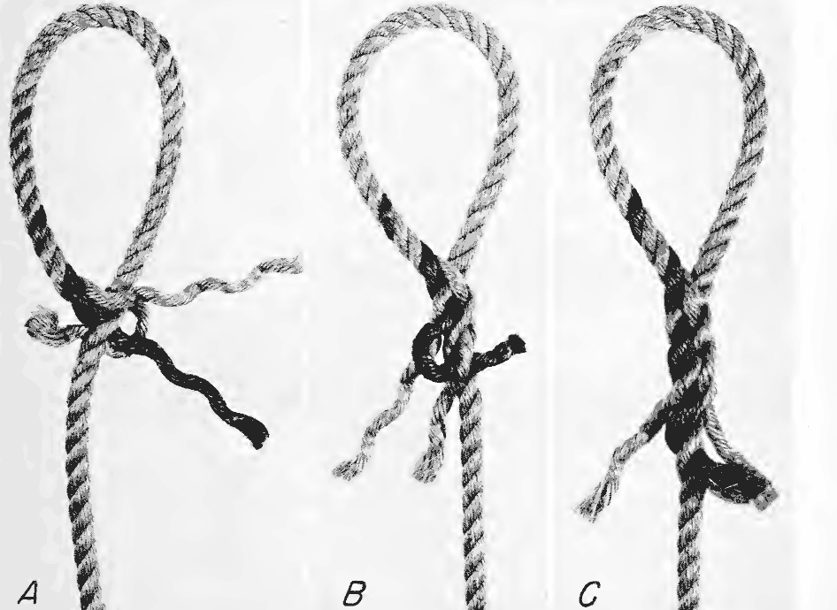
First tuck (A), second (B), and the finished splice (C) (Rope on the Farm, p. 11).A metal thimble inside the eye saves wear (FM 5-125, p. 70).
Breaking strength is the pull that parts it; the safe working load is "considerably less" (Navy Construction Electrician, p. 12). Safe load = breaking strength ÷ a safety factor: a new 1-inch manila rope breaks at 9,000 lb, so with a factor of 4 it may carry 2,250 lb. With no table, safe tons = (diameter in inches)², which allows a factor of about 4 (FM 5-125, p. 20).
| Rope | Safety factor (Navy, p. 12) |
|---|---|
| New | 4 |
| Used, in good shape | 6 |
| Worked hard: pulleys, daily use | 8 |
The factor should "NEVER be less than 3" (same page). Jerks, knots and sharp bends can cut strength "as much as 50 percent" (FM 5-125, p. 20). Nylon is nearly three times as strong as manila (p. 19); cotton is "not satisfactory for general farm use" (Rope on the Farm, p. 4).
| Knot | Strength left (TC 3-97.61, p. 177, nylon) |
|---|---|
| Figure eight | 75–80% |
| Bowline | 70–75% |
| Two half hitches | 60–70% |
| Clove hitch, overhand | 60–65% |
A plain overhand knot cuts a straight rope's strength by 55% (FM 5-125, p. 44). A pulley block for fiber rope should be about 8 times as long as the rope is thick (Rope on the Farm, p. 11).
Plant fiber, in short. Pull it, twist it, then tie an overhand knot: "If the knot does not break, the material is usable" (FM 3-05.70, p. 201; making lines). Try inner bark of linden, elm, hickory, white oak, mulberry or cedar (same page), dogbane stems cut in autumn (NRCS dogbane guide, p. 3; poisonous to eat and to stock, pp. 1–2), or mature nettle stems (OSU EM 9373, p. 1). Twist even strands clockwise, then lay two or three together counterclockwise so they lock (AFH 10-644, p. 274; the twists). A one-inch bark rope may hold 200–1,500 lb: "the lowest figure should always be regarded as the tensile strength" (p. 273). Retting nettle and spinning: Clothing & Leather, "Linen, nettle and native fibers". More, with the valley's own plants: Skills of the Valley's First Peoples ("Fibers, cordage and nets").
From animals (FM 3-05.70, pp. 201–202):
Tying an animal (4-H PNW 587, pp. 51–52; quick-release knot; Halter hitch):
A rope halter for a horse or cow: 14 ft of ½- or ⅝-inch three-strand rope, a tuck splice 18–22 inches from one end, and an eye splice in the short end (Rope on the Farm, p. 16; drawing).
Picket lines: a rope stretched tight on the ground between two pins, or 4–5 ft up between trees, tightened with a trucker's hitch. Tie animals 24 inches apart, alternate sides, short enough that they can't get a leg over (FM 25-7, pp. 155–156).
Pack and cart loads: balance the load, keep ropes away from the animal's feet and legs, and make every part as tight as possible (FM 25-7, p. 66). Cinch cart loads with trucker's hitches. Pack saddles and the diamond hitch: Horses. Carts, trailers and packboards: Bicycles & Carts.
| Book says | Do this instead |
|---|---|
| Square knot for ropes "under a heavy strain", with "a tapered metal or wood rod through the center" (Rope on the Farm, p. 10); it "Never slips or jams" (1911 Scout handbook, p. 78) | It "will not hold if the ropes are wet or if they are of different sizes" (FM 5-125, p. 46). Use a double sheet bend |
| Blackwall hitch: "apply the load ... so that the rope jams firmly on the hook" (Rope on the Farm, p. 15) | "Human life and breakable equipment should never be entrusted to the blackwall hitch" (FM 5-125, pp. 62–63). Use an eye splice or a cat's-paw (p. 53) |
| Bowline "Used in lowering a person from a burning building" (1911 Scout handbook, p. 78); the bowline on a bight "is the sling for hoisting a man" (Kephart, p. 291) | The figure eight has replaced it for rescue: stronger, easier to check (FM 3-05.70, pp. 646–647) |
| Safe load "one-third to one-half the breaking weight" (Mounted Instruction, p. 218) | A quarter for new rope, an eighth for hard-used rope (Navy, p. 12) |
| Two half hitches "will not slip under any strain" (1911 Scout handbook, p. 79) | A half hitch "is not a very secure knot" (AFH 10-644, p. 267). For a load, a round turn and two half hitches |
| The clove hitch "will not slip on itself nor along the pole" (Kephart, p. 282) | "Tension must remain on the knot or it will slip" (FM 3-05.70, p. 643) |
| A running noose with a stopper, "a simple way of picketing a horse" (Kephart, pp. 289–290) | Only a bowline round an animal's neck (4-H PNW 587, p. 51) |
| "A whip tackle doubles the power" (Mounted Instruction, p. 222) | Only if the pulley rides on the load; one tied to a beam just turns the rope (FM 5-125, p. 106) |
Look before you try it. 🖼️ = drawings in the books on this drive; the other links are photos in the offline Wikipedia.